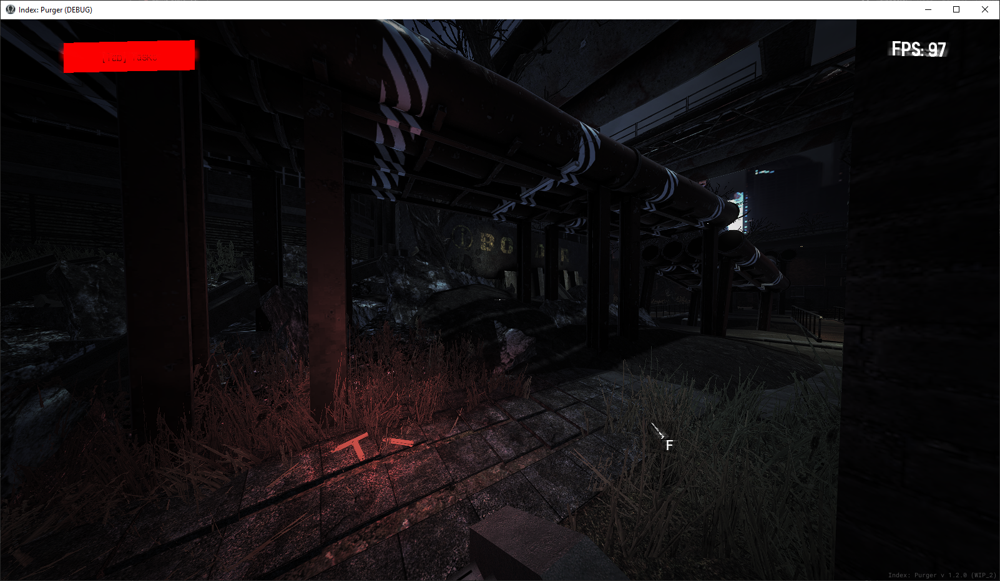
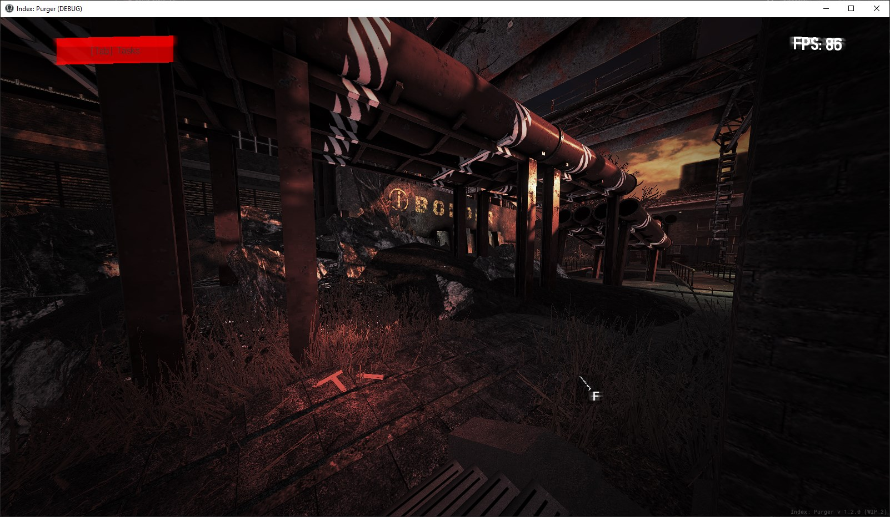
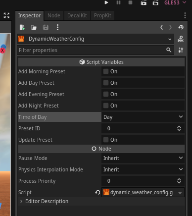

Module: dynamic_weather
Documentation last edited: December 1, 2025 at 21:49 UTC
Description


"Динамическая" погода. Ага... Смотри, я знаю, это звучит странно, но я хотел получить какие-то унифицированные значения
Environment
и
DirectionalLight
, которые можно было бы использовать во многих локациях. Более того? Возможность переключать эти пресеты по мере прохождения локаций. К сожалению, слишком сложно реализовать плавное переключение их во время игры, поэтому рекомендуется переключать эти пресеты с помощью
DynamicWeatherManager.update_locbase_environment()
только во время смены локаций или телепортов.
Также рекомендуется взглянуть на:
ST_DynamicWeatherAssign
ST_DynamicWeatherRandomize
ST_DynamicWeatherSet
COM_DynamicWeatherNightOnly
Assign ST помогает вызывать
DynamicWeatherManager.update_locbase_environment()
без необходимости писать для этого код. Другими словами, он просто меняет значения
Environment
,
DirectionalLight
и
LocationSkyClouds
.
Randomize ST - рандомизирует время суток и ID пресета текущей "динамической" погоды.
Set ST - устанавливает твоё красивенькое, предпочтительное время суток или ID пресета.
Компонент "Night Only" - помогает тебе сделать видимыми только те вещи, которые ты хочешь видеть ночью. Это полезно, чтобы только определённые источники света были видны вечером/ночью.

Смотри, есть штука под названием
DynamicWeatherConfig
, эта нода позволяет тебе проверять существующие пресеты, создавать новые и обновлять существующий. Измени
"Time of day"
на любое нужное тебе значение.
"Preset ID"
позволяет выбрать пресет.
"Add preset"
создаёт новый пресет на основе значений из
WorldEnvironment
и
DirectionalLight
. То же самое с
"Update preset"
- он берёт значения и обновляет пресет в файле.
General Information
Root directories list
assets, docs, src
Nodes
DynamicWeatherConfig
DynamicWeatherManager
Classes
None
Resources
DynamicWeatherData
DynamicWeatherPreset
Other Scripts
None